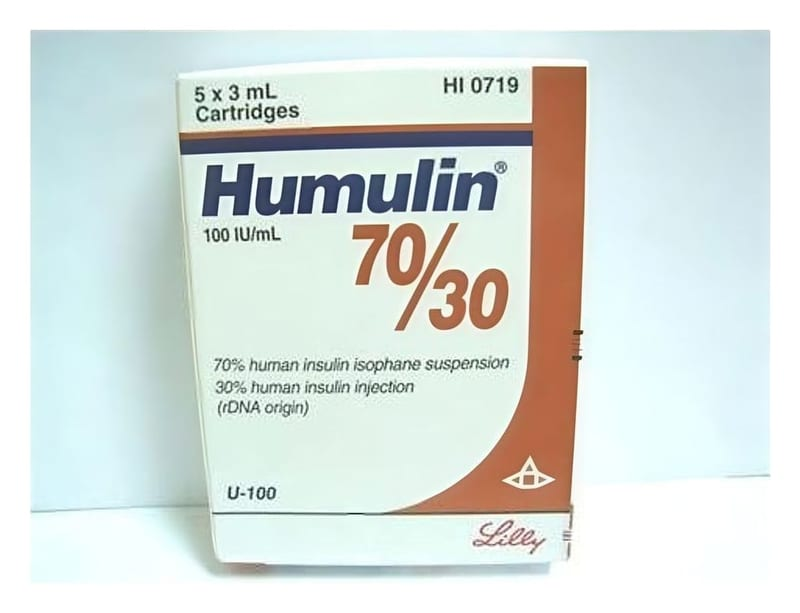

Humulin-M 70/30 100 IU/ml Süspansiyon İçeren Kartus, 5 Adet

Ne için kullanılır
KT · Bölüm 1HUMULIN M 70/30 beyaz, steril bir süspansiyondur.
HUMULIN M 70/30 kutusunda 3 ml’lik 5 adet süspansiyon içeren kartuş bulunur.
HUMULIN M 70/30 etkin madde olarak şeker hastalığını (diyabeti) tedavi etmek için kullanılan insan insülini içermektedir. Eğer pankreasınız kanınızdaki şeker düzeyinizi kontrol edecek kadar insülin üretmezse şeker hastalığı (diyabet) oluşur. HUMULIN M 70/30 kısa etkili (%30) insülin ile orta etkili (%70) insan insülinlerin karışımı olup uzun süreli glukoz kontrolünde kullanılır. İnsülinin etki süresi süspansiyon içersinde protamin sülfat ilavesi ile uzatılmıştır.
Doktorunuz size HUMULIN M 70/30 ile birlikte uzun etkili bir insülin de kullanmanızı söyleyebilir.
Her farklı tür insülin için ayrı kullanma talimatı bulunmaktadır. Doktorunuz size söylemeden insülininizi değiştirmeyiniz. İnsülininizi değiştirirseniz çok dikkatli olunuz. Her insülin türü için ayırt edebileceğiniz şekilde ambalaj ve kartuş üzerinde farklı renk ve sembol bulunmaktadır. HUMULIN M 70/30’u hayvan insülinleriyle ya da başka bir üretici tarafından üretilen insülinlerle karıştırarak kullanmayınız.